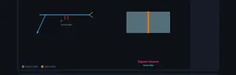
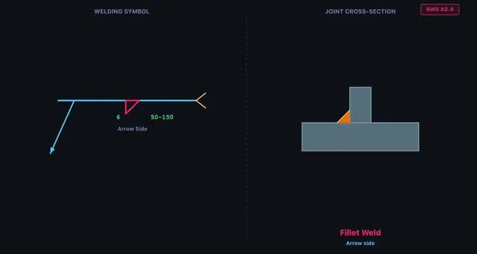
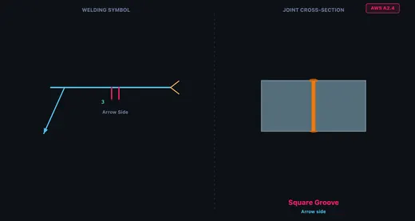
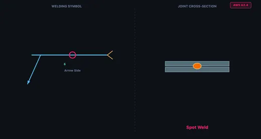

Welding Symbols Chart & Interactive Trainer
3D Model — Welding Symbols Chart & Interactive Trainer
Welding symbols chart and cheat sheet for AWS A2.4 and ISO 2553 — groove, fillet, plug, spot & seam welds. Interactive trainer, quiz and weld symbol test.
AWS A2.4 & ISO 2553 weld symbols — Learn • Explore • Practice • Quiz
⇄ AWS A2.4 vs ISO 2553 — rules side by side
| Aspect | AWS A2.4 | ISO 2553 (System A) |
|---|---|---|
| Reference line | Single solid line | Solid + parallel dashed line |
| Arrow-side symbol | Below reference line | On the solid line |
| Other-side symbol | Above reference line | On the dashed line |
| Fillet size | Leg length (no prefix) | a = throat, z = leg length |
| Tail process | Abbreviation (GMAW, SMAW) | ISO 4063 number (135, 111, 141) |
| Field/site flag | Same orientation | Same orientation |
| Bent arrow | Points to bevelled member | Same convention |
⚙ Supplementary symbols & contour — what each adornment means
- Circle at the arrow/reference junction → weld all around.
- Flag (pennant) at the junction → field/site weld. Same orientation in AWS and ISO.
- Contour just outside the symbol:
—flush,⌣convex,⌢concave. - Finish letter next to contour:
Ggrind,Mmachine,Cchip. - Backing bar (rectangle with chamfered corners) on the opposite side of the reference line.
- Melt-through (filled semi-circle) indicates 100% root penetration on the other side.
⚠ Common mistakes — what beginners get wrong
- Mixing AWS and ISO placement. Same shape, different line. In AWS the symbol's position above or below the line tells you the side. In ISO you read the line type (solid vs dashed) instead.
- Forgetting the bent arrow. For bevel, J, and flare-bevel grooves, a bent arrow is required (AWS A2.4 §6.4.1) to identify which member to prepare.
- Assuming ISO field weld flag is “reversed.” It is not — both standards draw the flag the same way. (Older textbooks sometimes claim otherwise.)
- Confusing “a” and “z” in ISO fillet welds. a5 means a 5 mm throat (smaller deposit); z5 means a 5 mm leg (larger deposit, since z ≈ a × √2).
- Reading the tail as part of the weld. The tail only carries process or reference notes — it is not the weld itself.
1 Overview
The Welding Symbol Trainer teaches you to read and interpret welding symbols according to both AWS A2.4 (American Welding Society) and ISO 2553 (International) standards. It covers 12 weld types across four categories: groove welds (square, V, bevel, U, J, flare-V, flare-bevel), fillet welds, plug and slot welds, and resistance welds (spot and seam). You can toggle between AWS and ISO placement rules to compare both standards side by side.
Welding symbols are the universal language of engineering drawings. The arrow points to the joint, the reference line carries the weld symbol, and dimensions specify size and length. In AWS A2.4, the arrow-side symbol goes below the reference line and the other-side symbol goes above. In ISO 2553, arrow-side goes on the solid line and other-side on a parallel dashed identification line. This trainer makes these rules intuitive through interactive diagrams.
2 Setting Up the Job

The trainer opens in Explore mode with the AWS A2.4 standard selected and the Groove weld category active. The canvas shows the selected weld symbol with dimension labels and a cross-section of the joint. Use the Standard toggle at the top to switch between AWS and ISO — watch how the symbol placement changes on the reference line.
Switch to Learn mode first if you are new to welding symbols. It presents a fully annotated welding symbol diagram with clickable part labels (reference line, arrow, tail, weld symbol, dimensions, supplementary symbols). This is the recommended starting point for beginners.
3 Learn Mode
Learn mode shows a complete welding symbol with all its components labelled. The canvas draws the reference line, arrow, tail, weld symbol shape, and dimension annotations. Below the canvas, clickable buttons let you highlight each part: Reference Line (the horizontal baseline), Arrow (points to the joint), Tail (forked end specifying process), Weld Symbol (shape indicating weld type), and supplementary symbols like field weld (flag), weld all around (circle), and contour symbols.
Toggle between AWS and ISO to see how the same information is presented differently. In AWS, the arrow-side symbol is below the reference line. In ISO, it sits on the solid continuous reference line, while the other-side symbol sits on a dashed identification line that can be above or below.
4 Speeds, Feeds & Theory
Explore mode is the main reference library. Choose a Weld Type category (Groove, Fillet, Plug & Slot, or Spot & Seam) and click any weld type card to view its symbol and joint cross-section. Use the Placement toggle (Arrow Side, Other Side, Both Sides) to see how the symbol changes position on the reference line.
For each weld type, the info card displays the weld name, category, description, and common applications. Groove welds include V-Groove (most common butt joint), Bevel (one plate bevelled), U-Groove (for thick plates), and J-Groove (one-sided U). The fillet weld — a right triangle symbol — is the most commonly used weld in fabrication, accounting for roughly 80% of all welds.
5 Try a Problem
Practice mode displays a random welding symbol on the canvas and asks you to identify the weld type from four answer options. Click the correct answer for instant feedback. Click Next for another challenge. Your running score is tracked across the session.
Quiz mode presents 5 scored questions. Each question shows a welding symbol and four options. After completing all questions, you receive a score with star rating and a detailed review showing which answers were correct. Click New Quiz to retry with different symbols.
6 Shop Tips
- In AWS A2.4: arrow side = below the line; other side = above the line. In ISO 2553: arrow side = solid line; other side = dashed line.
- The fillet weld symbol is a right triangle with the perpendicular leg always on the left. The leg size is written to the left of the symbol; the length to the right.
- For bevel, J, and flare-bevel grooves, the perpendicular leg always points left. A bent (broken) arrow points to the member that should be prepared (bevelled). The trainer draws the bent arrow automatically for these symbols.
- A circle at the arrow/reference line junction means “weld all around”. A flag (pennant) at the junction, flying toward the tail, means field/site weld. The flag direction is the same in AWS and ISO — it does not encode the standard.
- Contour symbols sit just outside the weld symbol: flat (—), convex (⌣), concave (⌢). A finish letter follows: G = grind, M = machine, C = chip.
- In ISO 2553, fillet weld size uses prefix “a” for throat thickness or “z” for leg length. AWS always uses leg length (no prefix).
- Tail content: AWS uses process abbreviations (GMAW, SMAW); ISO uses numeric ISO 4063 process codes (135 = MAG, 111 = SMAW, 141 = TIG).
- Study the Learn mode diagram thoroughly — most exam questions test arrow-side vs. other-side placement.
Understanding Welding Symbols — AWS A2.4 & ISO 2553 Interactive Trainer

A welding symbol is a standardised graphic on engineering drawings that specifies the type, size, location, and process of a weld. The two main standards are AWS A2.4 (North America) and ISO 2553 (rest of the world). This free trainer teaches both standards interactively across 12 weld types.
The full library covers four categories — groove welds (square, V, bevel, U, J, flare-V, flare-bevel), fillet welds, plug & slot welds, and resistance welds (spot, seam) — with accurate symbol geometry, joint cross-sections, and a Learn mode that breaks down every element of the symbol.
How do I read a welding symbol?
Start at the arrow — it points to the joint. Follow it to the reference line. The shape on the line (V, triangle, square, U, etc.) tells you the weld type. Numbers to the left of the shape are the weld size; numbers to the right are length (and pitch in parentheses for intermittent welds). A circle at the arrow/reference junction means weld all around. A flag means field/site weld. The forked tail (opposite the arrow) can carry the welding process or specification.
Anatomy of a Welding Symbol
Every welding symbol is built on a reference line — a horizontal line from which all information hangs. An arrow connects the reference line to the joint. A forked tail on the opposite end can specify the welding process. Dimensions — weld size (left of the symbol) and length (right) — complete the specification. Supplementary symbols indicate field welds (flag), weld-all-around (circle), and face contour (flush, convex, concave) with optional finish letter (G = grind, M = machine, C = chip).
AWS A2.4 vs ISO 2553 — Key Differences
The biggest difference is symbol placement. In AWS A2.4, the arrow-side symbol goes below the reference line and the other-side symbol goes above. In ISO 2553 System A, there are two parallel reference lines: a solid (continuous) line and a dashed (identification) line. The arrow-side symbol sits on the solid line, and the other-side symbol sits on the dashed line — regardless of whether the dashed line is drawn above or below the solid one. Other differences: fillet weld sizing uses leg length in AWS but throat thickness (prefix "a") or leg length (prefix "z") in ISO; tail references use process abbreviations (GMAW, SMAW) in AWS but numeric ISO 4063 process codes (e.g., 135, 111) in ISO. The field/site weld flag is drawn the same way in both standards — a filled triangular flag on a vertical pole at the arrow/reference-line junction, flying toward the tail — contrary to a common myth that AWS and ISO use opposite directions.
What does a bent or broken arrow mean?
Per AWS A2.4, a bent (broken) arrow on a welding symbol indicates an asymmetric joint preparation — typically a bevel-groove, J-groove, or flare-bevel-groove. The kink in the arrow points to the specific member that is to be prepared (bevelled or J-grooved). The perpendicular leg of the weld symbol is always drawn on the left, regardless of which member is being prepared — so the bent arrow is what disambiguates the orientation. The trainer's Explore mode draws this bent arrow automatically for bevel-type symbols.


Types of Weld Symbols
Groove welds include Square, V-Groove, Bevel, U-Groove, J-Groove, Flare V-Groove, and Flare Bevel. They are used for butt joints where full or partial penetration is required. The fillet weld — the most common weld type, accounting for roughly 80% of all welds — is used on T-joints, lap joints, and corner joints. Plug and slot welds join overlapping plates through circular or elongated holes. Spot and seam welds are resistance welds that fuse overlapping sheet metal without filler material. The elementary symbol shapes (V, triangle, U, etc.) are identical between AWS and ISO — only the placement rules and dimension notation differ.
How to Use This Trainer
Use the Standard toggle to switch between AWS A2.4 and ISO 2553. Start in Learn mode to study the anatomy of a welding symbol with interactive part highlighting — notice how the diagram updates to show AWS or ISO placement rules. Switch to Explore mode to browse all 12 weld types with the symbol diagram and joint cross-section. Practice mode presents random symbol identification challenges, and Quiz mode tests your knowledge with 5 scored questions.
Who Uses This Trainer?
This welding symbol trainer is designed for welding students, fabrication apprentices, mechanical engineering learners, CWI exam candidates (Certified Welding Inspector), IWE/IWI candidates (International Welding Engineer/Inspector), NDT technicians, and workshop instructors worldwide who need a quick, visual way to learn and compare AWS and ISO welding symbols.
Welding Symbols — AWS A2.4 Quick Reference
| Weld Type | Symbol Location | Joint Type | Common Use |
|---|---|---|---|
| Fillet | Triangle on reference line | Lap, Tee, Corner | Most common structural weld (~80%) |
| Square Groove | Two vertical lines | Butt | Thin sheet metal butt joints |
| V-Groove | V shape | Butt | Full penetration butt welds |
| Bevel Groove | Half-V shape | Butt, Tee | One plate bevelled, other square |
| U-Groove | U shape | Butt | Thick sections, less filler metal than V |
| J-Groove | J shape | Butt, Tee | One plate J-prepped, less filler than bevel |
| Plug / Slot | Rectangle | Lap | Joining overlapping plates through holes |
| Spot | Circle centred on reference line | Lap | Resistance weld at a point; sheet metal |
| Seam | Circle with two parallel lines through it | Lap | Continuous resistance weld for sheet metal |
AWS vs ISO Welding Symbol Differences
| Feature | AWS A2.4 | ISO 2553 |
|---|---|---|
| Arrow side symbol | Below reference line | Above reference line (solid) |
| Other side symbol | Above reference line | Below reference line (dashed) |
| Dashed line | Not used | Used to indicate other side |
| Tail content | Process, specification | Process number (ISO 4063) |
| Weld size placement | Left of symbol | Left of symbol |
Explore Related Simulators
If you found this Welding Symbols simulator helpful, explore our Bolted Joint simulator, Riveted Joints simulator, and Stress–Strain Curve simulator for more hands-on practice.